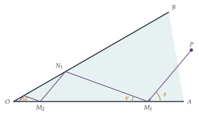

STEP III 2002，第 11 题
继续之前，请先阅读题目（原题为英文）。题目载于 STEP Support Programme 的题目资料库： step.maths.org/questions/02-s3-q11
引子
埃利亚的芝诺（Zeno of Elea）曾经论证，你永远走不到一堵墙：你必须先走完一半的距离，然后再走完余下距离的一半，如此类推，永无止境。化解这个悖论的关键，在于无穷多步所需的总时间可以是有限的，也就是一个收敛（converge）的无穷级数（infinite series）。这道题目正是芝诺悖论（Zeno’s paradox）的真实版本：一个冰球滑进楔形的角落，在两面墙之间反弹无穷多次，却在有限时间内到达角落。
大自然也会这样做。一个球在地板上弹跳，若恢复系数（coefficient of restitution）小于 \(1\)，它会在有限时间内弹跳无穷多次，然后静止下来。在颗粒物质（沙、谷物、雪）的电脑模拟中，这种“非弹性坍缩”（inelastic collapse）是个实实在在的难题：电脑要在有限时间内处理无穷多次碰撞。
动笔之前
当一个质点（particle）以恢复系数 \(e\) 撞向一面光滑的墙时，速度沿墙方向的分量会怎样？垂直于墙的分量又会怎样？
光滑的墙不会沿着墙面施力，所以速度平行于墙的分量保持不变。垂直分量则会反向，并乘以 \(e\)。因此，若质点以与墙成 \(\alpha\) 的角度到达，并以 \(\beta\) 的角度离开，则 \[\tan\beta = e\tan\alpha,\] 而由于平行分量不变，（入射速率）\(\cos\alpha\) =（离开速率）\(\cos\beta\)。
逐步解题
阶段 1 离开的角度
质点到达 \(M_1\) 时与墙 \(OA\) 成角 \(\theta\)（在远离 \(O\) 的一侧量度）。它离开时与 \(OA\) 所成的角 \(\varphi\) 是多少？利用三角形 \(OM_1N_1\)，以 \(\theta\) 表示 \(\varphi\)。
质点离开 \(M_1\) 时朝着 \(O\) 的一侧前进，与墙成角 \(\varphi\)，所以角 \(OM_1N_1\) 等于 \(\varphi\)。在三角形 \(OM_1N_1\) 中，位于 \(O\) 的角是 \(30^\circ\)。在 \(N_1\)，角 \(M_1N_1B\) 等于 \(\theta\)，而 \(O\)、\(N_1\)、\(B\) 在同一直线上，所以角 \(ON_1M_1\) 等于 \(180^\circ - \theta\)。三角形的内角和为 \(180^\circ\)： \[30^\circ + \varphi + (180^\circ - \theta) = 180^\circ, \qquad\text{所以}\qquad \varphi = \theta - 30^\circ.\] （特别地，\(\theta > 30^\circ\)。）于是由恢复定律 \(\tan\varphi = e\tan\theta\) 可得 \[e = \frac{\tan(\theta - 30^\circ)}{\tan\theta},\] 而由平行分量守恒 \(u_1\cos\theta = v_1\cos\varphi\) 可得 \[\frac{v_1}{u_1} = \frac{\cos\theta}{\cos(\theta - 30^\circ)}. \qed\]
阶段 2 规律重复出现
在 \(N_1\)，质点到达时与墙 \(OB\) 成角 \(\theta\)（在远离 \(O\) 的一侧量度）。把这个情况与它到达 \(M_1\) 时的情况比较一下。接下来会发生甚么事？
\(N_1\) 的情况是 \(M_1\) 的情况的镜像：质点以角 \(\theta\) 撞上一面墙，而这个角位于远离 \(O\) 的一侧。所以它以角 \(\theta - 30^\circ\) 离开，再以角 \(\theta\) 撞上 \(OA\)，如此类推，永无止境。每一次反弹都是第一次反弹按比例缩放后的复制品。三角形 \(OM_kN_k\)、\(ON_kM_{k+1}\)、… 每一个都与前一个相似（图 10.5.1），而每次反弹时速率都乘以同一个因子。
阶段 3 两个比
由一次反弹到下一次反弹，与 \(O\) 的距离按甚么因子 \(\rho\) 缩小？速率按甚么因子 \(k\) 缩小？那么每一段路程所需的时间又按甚么因子缩小？
在三角形 \(OM_1N_1\) 中应用正弦定理（sine rule），可得 \[\rho = \frac{ON_1}{OM_1} = \frac{\sin\varphi}{\sin(180^\circ - \theta)} = \frac{\sin(\theta - 30^\circ)}{\sin\theta}.\] 下一个三角形的所有长度都是这个三角形的 \(\rho\) 倍，所以路径的每一段都是前一段的 \(\rho\) 倍长。每次反弹时速率都乘以 \(k = \frac{\cos\theta}{\cos(\theta - 30^\circ)}\)。时间等于长度除以速率，所以每一段所需的时间是前一段的 \[\frac{\rho}{k} = \frac{\sin(\theta - 30^\circ)\cos(\theta - 30^\circ)}{\sin\theta\cos\theta} = \frac{\sin(2\theta - 60^\circ)}{\sin 2\theta}\] 倍。
阶段 4 一个等比级数
总时间是 \(T_1(1 + r + r^2 + \cdots)\)，其中 \(T_1\) 是第一段所需的时间，而 \(r = \frac{\sin(2\theta - 60^\circ)}{\sin 2\theta}\)。这是一个等比级数（geometric series），若 \(0 < r < 1\)，总时间便是有限的。
\(\sin(2\theta - 60^\circ) < \sin 2\theta\) 在甚么时候成立？利用恒等式 \(\sin X - \sin Y = 2\cos\tfrac12(X + Y)\sin\tfrac12(X - Y)\)。
\[\sin 2\theta - \sin(2\theta - 60^\circ) = 2\cos(2\theta - 30^\circ)\sin 30^\circ = \cos(2\theta - 30^\circ),\] 当 \(2\theta - 30^\circ < 90^\circ\)，即 \(\theta < 60^\circ\) 时，上式为正。另外，由于 \(\theta > 30^\circ\)，故 \(r > 0\)。所以当 \(30^\circ < \theta < 60^\circ\) 时，级数收敛：质点反弹无穷多次，它与 \(O\) 的距离每次按因子 \(\rho < 1\) 缩小，并在有限时间 \(\frac{T_1}{1 - r}\) 之后到达 \(O\)。■

回顾
自相似性（self-similarity）。一旦弄清楚一次反弹，其后每一次反弹都只是按比例缩放的复制品，所以整个无穷过程就归结为两个比。
正确地组合各个比。距离按 \(\rho\) 缩小，速率按 \(k\) 缩小，所以时间按 \(\rho/k\) 缩小。
无穷多个事件，有限的总和。公比小于 \(1\) 的等比级数收敛。
背后的数学
当 \(\theta \geq 60^\circ\) 时
当 \(\theta = 60^\circ\) 时，这个比恰好等于 \(1\)：每一段所需的时间都相同，质点虽然愈来愈接近 \(O\)，却永远到不了。（速率和每段的长度都按同一个因子缩小。）当 \(\theta > 60^\circ\) 时，每一段所需的时间愈来愈长。在所有情况下，质点都会趋近 \(O\)，并反弹无穷多次；只有当 \(\theta < 60^\circ\) 时，它才会在有限时间内到达。\(e = \tan 30^\circ/\tan 60^\circ = \frac13\) 这个值就是分界线。
弹跳的球与非弹性坍缩
同一现象最简单的例子：一个球掉落到地板上，反弹至高度 \(e^2H\)，然后是 \(e^4H\)，如此类推。两次弹跳之间的时间与每次弹跳时的速率成正比，而速率按因子 \(e\) 缩小，所以总时间是一个等比级数：设 \(T_0 = \sqrt{2H/g}\) 为第一次下落的时间，则球在 \[T_0 + 2eT_0 + 2e^2T_0 + \cdots = T_0\,\frac{1 + e}{1 - e}.\] 之后停止弹跳。无穷多次弹跳，然后静止。1992 年，Sean McNamara 和 William Young 证明了，在模拟排成一直线的多个非弹性质点时，同样的事情也会发生：其中一组质点可以在有限时间内发生无穷多次碰撞，这就是“非弹性坍缩”。沙和颗粒流的模拟必须加入特别的规则来避免这种情况，而这个现象也有助解释为何颗粒气体会自发地聚集成团。
芝诺的悖论约于公元前 450 年提出，困扰了哲学家两千年。数学上的解答，即无穷和可以有有限的值，要到十九世纪才变得严谨，当时柯西（Cauchy）、魏尔斯特拉斯（Weierstrass）等人以极限（limit）来定义收敛（这是第 2 章的主题）。这道题目令人惊讶之处，在于这个过程在物理上是无穷的：确确实实有无穷多次碰撞，发生在有限时间之内。研究多边形内的桌球运动和碰撞质点运动的数学家，把这种行为称为芝诺现象（Zeno phenomenon）；要证明由互相碰撞的硬球组成的系统在所有时刻都有明确定义的运动，这正是其中一个微妙之处。
思维技巧
当一个过程以固定的缩放因子不断重复时，任何可加的量（时间、距离、能量）的总和都是一个等比级数。根据公比判断它是否收敛。
这里的关键是找出正确的比：不是距离之比，也不是速率之比，而是时间之比。在大学里，同样的推理支配着迭代法（iterative methods）的收敛性、分形（fractal）理论，以及对反复把问题减半的算法（algorithm）的分析。
延伸练习
总距离。证明对于 \(30^\circ\) 与 \(90^\circ\) 之间的每一个 \(\theta\)，由 \(M_1\) 到 \(O\) 所走的总距离都是有限的，并以 \(OM_1\) 和 \(\theta\) 表示这个总距离。
其他楔形。把 \(30^\circ\) 换成角 \(\alpha\) 的楔形，重做这道题目。证明 \(\varphi = \theta - \alpha\)，并求出质点在有限时间内到达 \(O\) 时 \(\theta\) 须满足的条件。
弹性墙。若 \(e = 1\)，质点有可能到达 \(O\) 吗？（提示：把楔形沿它的墙反复反射，使路径变成一条直线。围绕 \(O\) 可以放下多少个 \(30^\circ\) 的楔形？）
弹跳的球。一个球从 \(1\) m 的高度掉下，\(e = 0.8\)。它会弹跳多久？它总共走了多远？（取 \(g = 9.8\) m s\(^{-2}\)。）
延伸阅读
David Morin, Introduction to Classical Mechanics（Cambridge University Press），第 5 章。书中有多道关于弹跳的球和无穷多次连续碰撞的题目。
Sean McNamara & William Young, “Inelastic collapse and clumping in a one-dimensional granular medium”（一维颗粒介质中的非弹性坍缩与聚团），Physics of Fluids A 4 (1992)。
Serge Tabachnikov, Geometry and Billiards（American Mathematical Society；可在网上免费阅读）。讲述桌球的数学，包括练习中用到的展开技巧。